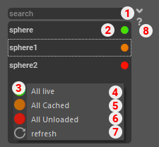

Reference Manager¶
This tool allow you to cache unload or load your references. Handy when you need to see what your character are doing but the rigs are too heavy
Launch in maya¶
If you have created a shelf when installing the tools you just have to press this icon
If not you can run this code in Maya script editor
import Sculpt_anim.ui as sculpt_anim
try:
UI.main_ui.deleteLater()
UI.main_ui_quit()
except (RuntimeError, TypeError, NameError):
pass
except Exception as e:
cmds.warning(e)
sculpt_anim_UI = sculpt_anim.SculptAnimUI()
sculpt_anim_UI.main_ui.show()
Interface¶
- Search Bar
Input box that allow you to search for a particular reference name or state
- Reference list
List all the reference in the scene and their current state.
Green: Loaded
Orange: Cached
Red: Unloaded
- Right Click Menu
Pop up menu with additional actions
- Load All
Change state for all displayed reference
- Cache All
Change state for all displayed reference
- Unload All
Change state for all displayed reference
- Refresh button
update the scene reference (if for example a new reference is imported)
Help